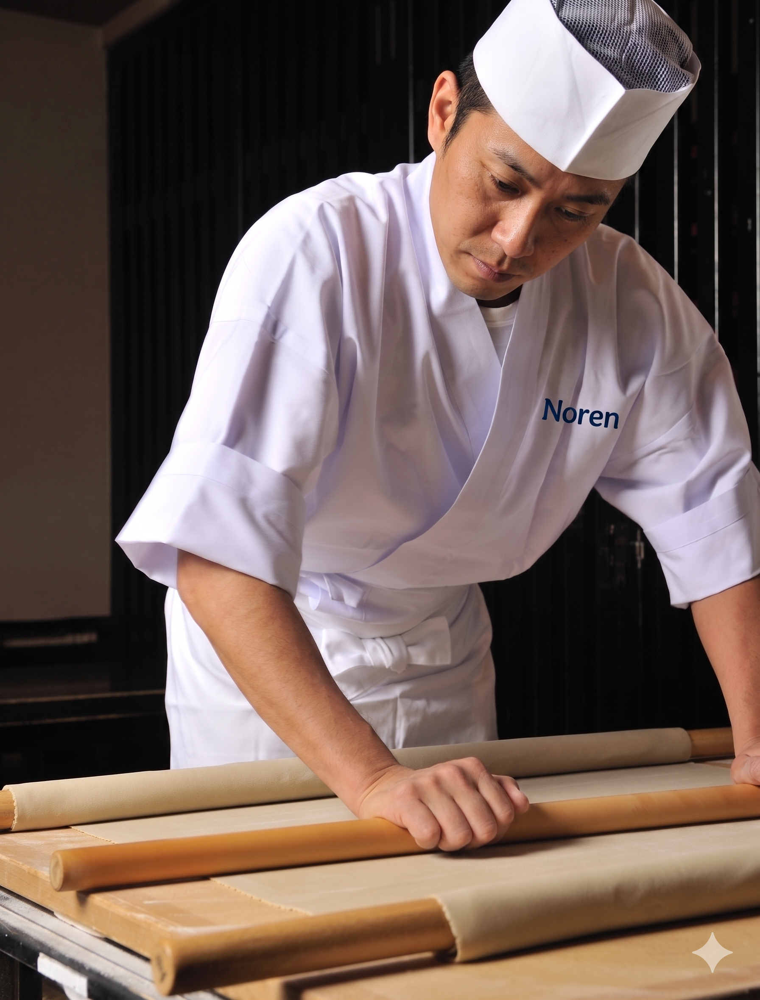

Soba Making Experience
10 XRP
Signature
Learn from flour to final bowl, then enjoy your own fresh soba on the spot.
Loading live rate...
From hand-made soba to neighborhood sento culture, Noren creates premium micro-experiences for international travelers in Asakusa.

Learn from flour to final bowl, then enjoy your own fresh soba on the spot.
Loading live rate...
Taste local favorites and hidden counters selected by an Asakusa resident.
Loading live rate...
Discover neighborhood bathhouses and enjoy them with confidence and respect.
Loading live rate...
Drop your bags safely and explore the district without extra weight.
Loading live rate...
Relax with local drinks and connect with Asakusa's evening atmosphere.
Loading live rate...
Stay overnight and wake up to a true local morning in Asakusa.
Message the AI guide and share your date, group size, and interests.
Receive a tailored plan and final XRP quote within minutes.
Meet locally, pay with XRP, and enjoy your curated experience.
Chat with the AI concierge in EN / 日本語 / 中文 / 한국어 and get a smooth travel plan with local support.
Talk to the AI Guide